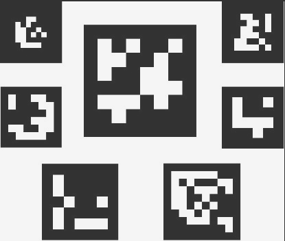

In this project we have implemented photorealistic rendering in Augmented Reality based on image-based lighting. We use ArUco (binary square fiducial marker) as the marker and combine OpenCV and OpenGL to detect the marker and render AR object on it. We have also implemented texture mapping. Then, we extracted the light probes in our scene to create a basic light-based model and finally rendered some photorealistic AR objects.
At this stage our project has accomplished three things:
We will explain how the marker detection part is decided and implemented.
At the beginning, we search a tutorial online, which uses the ORB(Oriented Rotated BRIEF) method in OpenCV,
which is able to get the features of the given image by smoothing the image and then recognize the input video,
if there is something shares the same extracted features, then we recognize that object in the given video(or image)
as the target for our future rendering part. However, we do not need to ensure such a generality because arbitrary image
brings higher requirement for the quality of the video and we have to make the target object clear enough in the environment,
not to mention the target marker must be as flat as possible.
As shown in the vedio below, the implemented code using ORB is not ideal at all, we can see that there are non-ignorable
noise on the
First, we elected to use Aruco marker to do location detection. This process is based on finding correspondences between points in the real environment and their 2d image projection.
some example of Aruco marker
|

|
An ArUco marker is a square marker with a black border and a binary matrix inside that identifies it. The black border helps it to be quickly detected in an image and the binary code allows for identification and error correction techniques.
it can detect the rotation of the marker based on binary codification
two steps to do marker detection 1.The detection of marker candidates involves analyzing an image to find square shapes that could be markers. This is done through adaptive thresholding and extracting contours from the thresholded image, then filtering out those that are not convex or do not approximate to a square shape. 2.analyze their inner codification to determine if they are actually markers. This involves perspective transformation to obtain the marker in its canonical form, thresholding to separate white and black bits, and counting the amount of black or white pixels in each cell to determine if it is a white or black bit. The bits are then analyzed to see if they belong to a specific dictionary, and error correction techniques are used if necessary.
then, we need to obtain camera pose. First, do calibrateCamera(), so that we can get the camera matrix and the distortion coefficinets.Then we should draw the this can be done by cv::aruco::drawAxis
For the next step, we also want to build 3D models on the reference plane. This is equivalent to adding the column for z axis in our original transformation matrix. We could use the two column that we already got to estimate the third column for the z axis. Then, we are able to render 3D object in our camera.
This part, we apply Aruco marker, which is showed on the below video. we make the marker detection efficient enough for the live demo and stable enough to render some models on it
|
|
|
this is the part where we implement the Image Based Lighting. The left one is at a dark environment. The right one is at a bright environment.
Additionally, we do some texture mapping on this teapot in below video
it might be a little bit unstable, but you can see from video, it has quite good effects.
Calvin Yan: Decided on the project topic and scope, developed final marker tracking, rendering, and image based lighting code
Ruichi Zhang : Did some early researches and find staring point, implemented texture mapping,
Yuntian Ke: Go through papers to find good IBL which can let us use it in real-time and even in situations we don't have 360 degree view. Prepare for slices; try to implement marker tracking for some simple models at the beginning.
Wentao Zhang :Prepare for the slides; Search for the image based lighting algorithm used in the final presentation; Finding the starter code of detection and try to implement it(both milestone and the final one)
Most of our work so far started from these two tutorials:
Additionally, as before we will use the work of Ian Curtis as a source of aesthetic inspiration for our final product: Twitter and Instagram
Below are some resources we explored and discussed about for image-based lighting:
As well as other development resources: